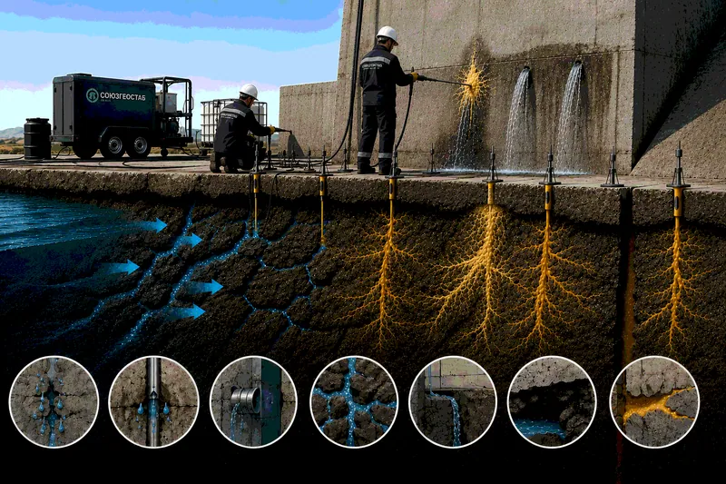
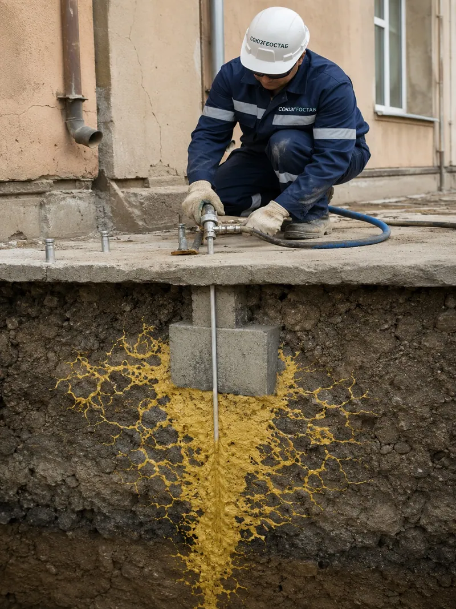
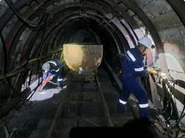
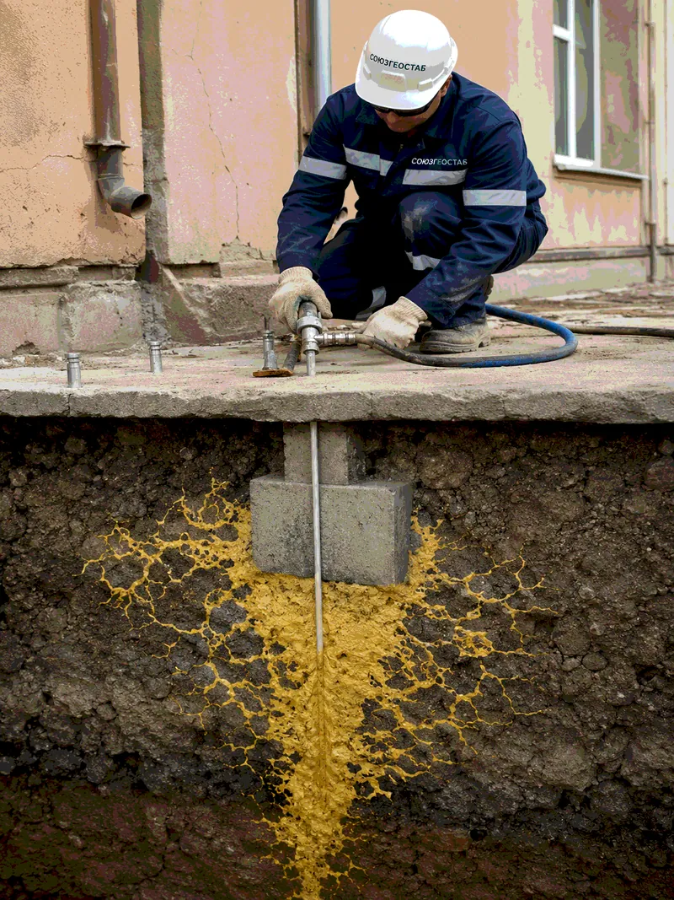

Устранение водопритоков и инъекционная гидроизоляция
Останавливаем воду там, где она уже течёт. Инъекционная герметизация работает по активному притоку и под напором - не требует осушения участка, доступа снаружи и вскрытия конструкции.

Технология
Устраняем протечки и фильтрацию через трещины, швы, контакты конструкций и водопроводящие каналы, восстанавливая герметичность сооружений и массива. Работаем изнутри, по действующей воде.
Принцип
В конструкции по контуру дефекта устанавливаются пакеры - инъекционные штуцеры в наклонных шпурах, пересекающих трещину или шов на расчётной глубине. Через них подаётся состав, который заполняет дефект по всей толщине, а не только у поверхности.
Для остановки активного напорного притока применяются гидроактивные полиуретаны: при контакте с водой они вспениваются с многократным увеличением объёма и перекрывают канал за секунды. Это первичная отсечка. Затем по тому же контуру подаётся эластичный или структурный состав, формирующий постоянную герметизирующую завесу.
Самая частая ошибка при герметизации - работа по месту выхода воды. Точка, где вода появляется на поверхности конструкции, почти никогда не совпадает с местом её входа: вода идёт по пути наименьшего сопротивления и может выйти в нескольких метрах в стороне. Поэтому работам предшествует поиск реального пути фильтрации.
Варианты
Реагируют на воду, вспениваются, быстро перекрывают активный приток. Основной инструмент аварийной отсечки.
Сохраняют подвижность после полимеризации. Применяются в деформационных швах, где жёсткий состав разорвёт при первом же цикле раскрытия.
Низкая вязкость, высокая проникающая способность. Применяются для завес по контакту «конструкция - грунт» и в трещинах малого раскрытия.
Минеральный вариант для трещиноватых массивов и крупных каналов, где требуется структурная прочность и большой объём заполнения.
Параметры
Диапазоны применимости технологии. Параметры для конкретного объекта уточняются по результатам обследования и опытного участка.
| Работа по активному притоку | да, включая напорную воду |
|---|---|
| Раскрытие герметизируемых трещин | от 0,1 мм |
| Давление инъекции | до 250 бар в зависимости от конструкции |
| Время начала реакции аварийного состава | от 5 секунд |
| Доступ | односторонний, изнутри сооружения |
| Осушение участка перед работой | не требуется |
| Устойчивость | состав не вымывается, не подвержен биоразложению |
Применение
Контроль
Измеряется фактическое снижение водопритока: расход в м³/час до и после работ, влажность конструкции, отсутствие видимой фильтрации. На гидротехнических объектах дополнительно контролируется пьезометрический режим.
Оценка выполняется после выдержки под рабочим напором, а не сразу по завершении инъекции. Только так становится видно, не открылся ли обходной путь фильтрации - и нужна ли догерметизация.
Связанные задачи

Останавливаем воду там, где она уже течёт. Инъекционная герметизация работает по активному притоку и под напором - не требует осушения участка, доступа снаружи и вскрытия конструкции.

Когда счёт идёт на часы. Локализуем аварийный процесс, останавливаем его развитие и приводим объект в состояние, при котором можно спокойно готовить капитальное решение.

Пустота под конструкцией - это нагрузка, которой некуда передаться. Заполняем полости, каверны и зоны разуплотнения, восстанавливая сплошность основания и контакт конструкции с ним.
Частые вопросы
Нет. Гидроактивные составы реагируют именно на воду, поэтому активный приток для них рабочее условие. По сухой трещине такой состав работает хуже.
Это типичный результат работы по месту выхода воды, а не по пути фильтрации. Вода находит обходной канал. Решение - поиск реального пути притока геофизикой и трассированием, затем герметизация по всему контуру.
Полимеризованный состав не вымывается и не подвержен биоразложению. В деформационных швах ресурс определяется правильностью подбора эластичности состава под фактическую амплитуду раскрытия.
Оценка объекта
Направьте описание проблемы, фото, материалы обследований, данные по геологии, водопритокам, осадкам, кренам или деформациям. Мы предварительно оценим задачу и предложим инженерное решение.
Также можно заказать выезд специалиста на объект - для обследования, инструментальной диагностики и подготовки рекомендаций по устранению проблемы.